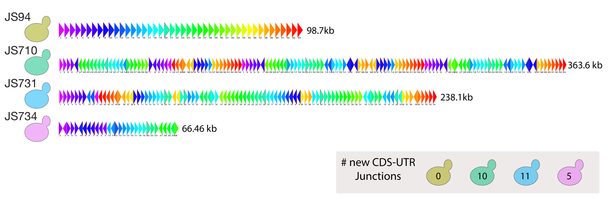

Transcription in a SCRaMbLEd genome
Steinmetz and Stegle Groups, EMBL Heidelberg
Follow along on 
bit.ly/2qNwvGb
Why are genomes organized as we observe them?
Transcription is linked to genome architecture

How is the transcriptional landscape modified by genome SCRaMbLEing?

Extensive heterogeneity among SCRaMbLE strains

SynIXR SCRaMbLE Strains
Near complete assembly of SCRaMbLE genomes with long-reads
Variable difficulty of de novo assembly for SynIXR SCRaMbLEs
Fixed mean read length = 3.98 kb
-
SynIXR SCRaMbLEd genomes can be assembled de novo from long reads
-
Each assembly may require different strategy
- Tools to finish assemblies, e.g. targeted sequencing. Broadly applicable to assembly of genomes with complex structural rearrangements.
Sequencing methods to measure changes in the transcriptome

Mapping 3'-ends is problematic with short reads
SCRaMbLEd SynIXR 3'-ends vary
Kernel PCA (Cosine kernel) from 22 segments represented in all strains
Native Chr 3'-ends do not vary
Kernel PCA (Cosine kernel), ChrV
-
Global 3'-end variation on SynIXR SCRaMbLEd chromosomes, but not native chromosomes
-
Can't say where, why or how these changes occur...yet
-
Full-length isoform sequencing (Iso-Seq) will resolve some mapping ambiguities
- Emergence of new ncRNA transcripts from bidirectional promoters?